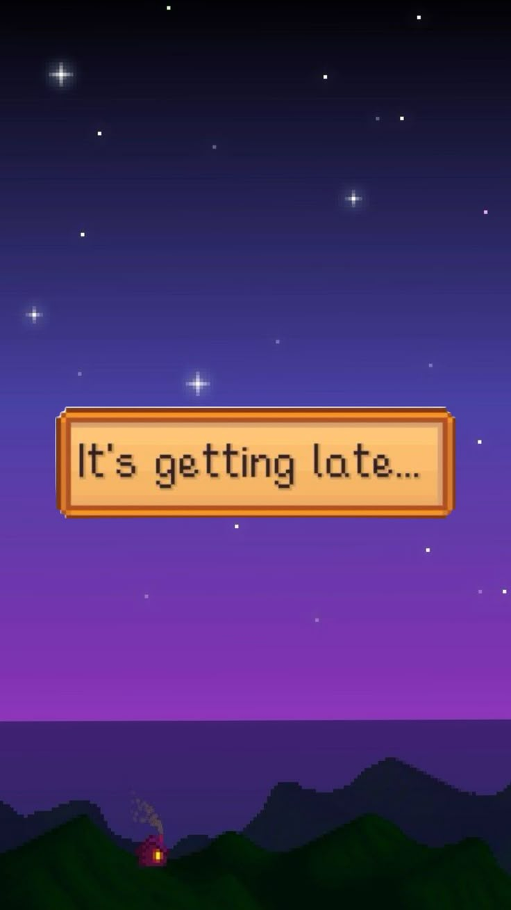
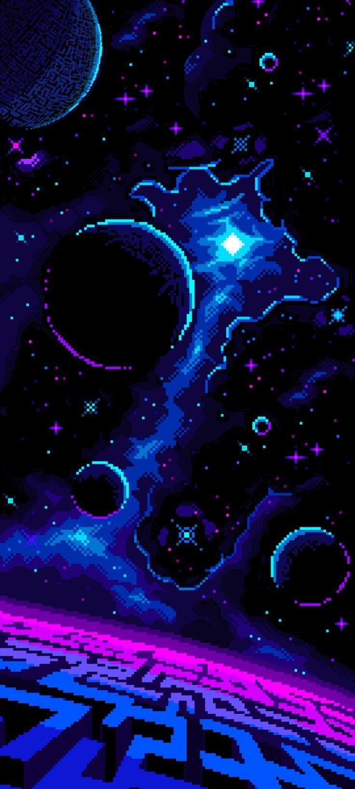
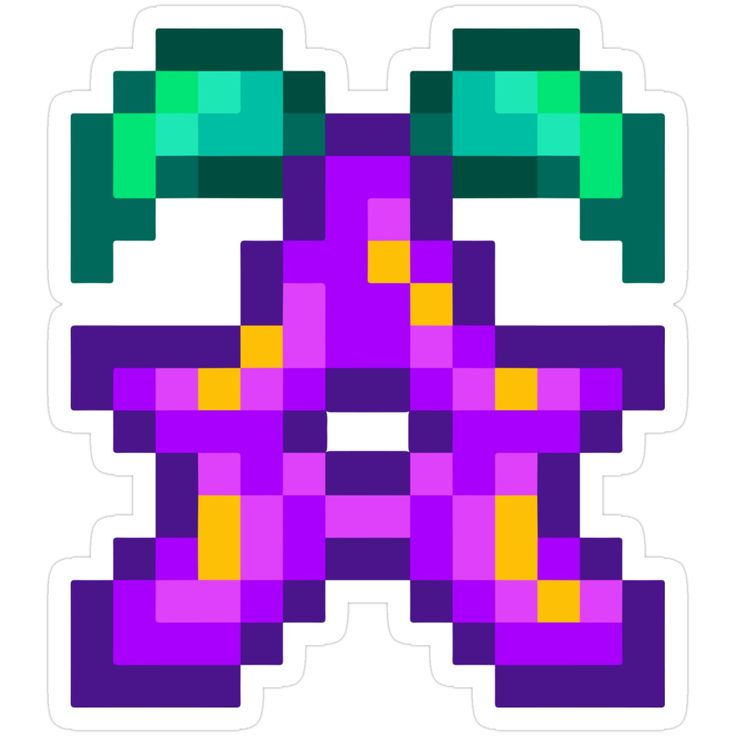
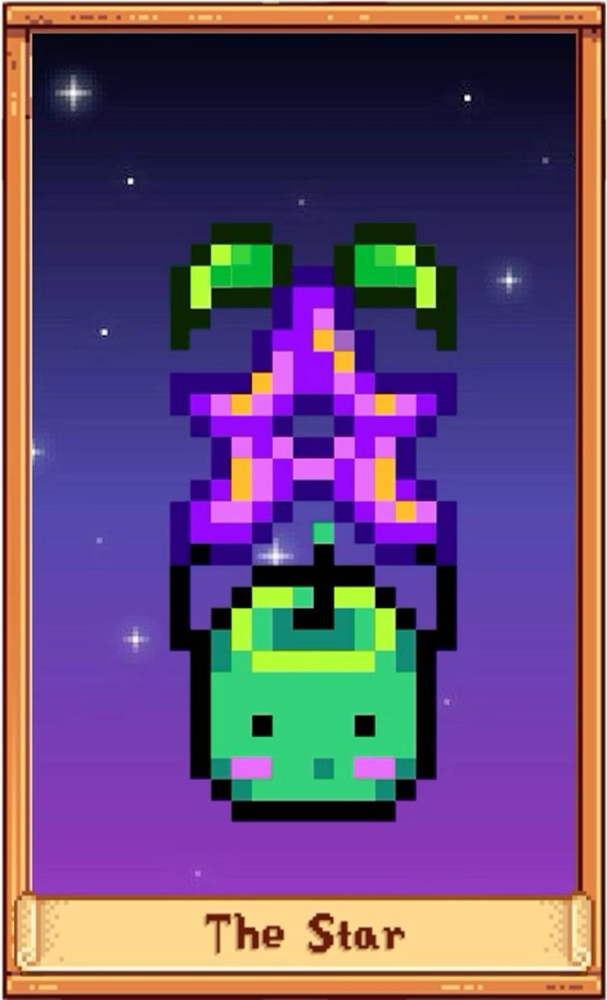
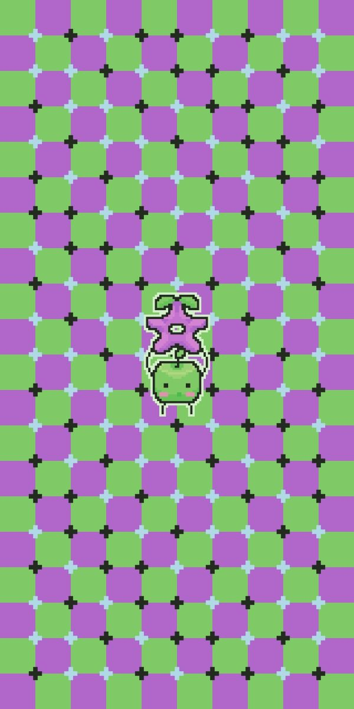
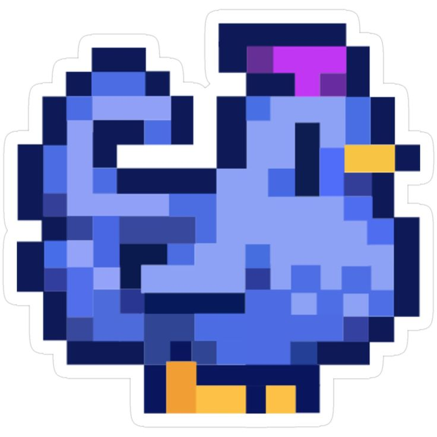
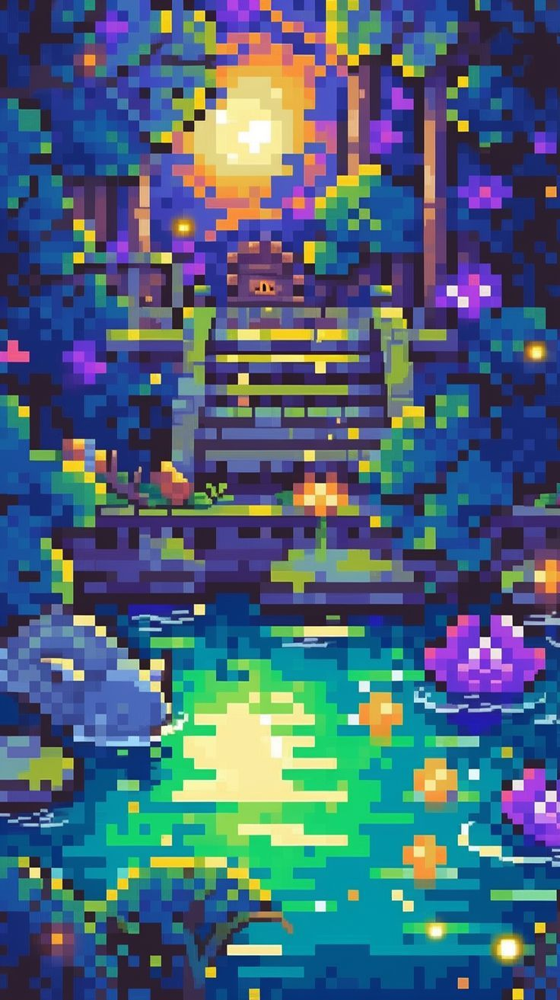
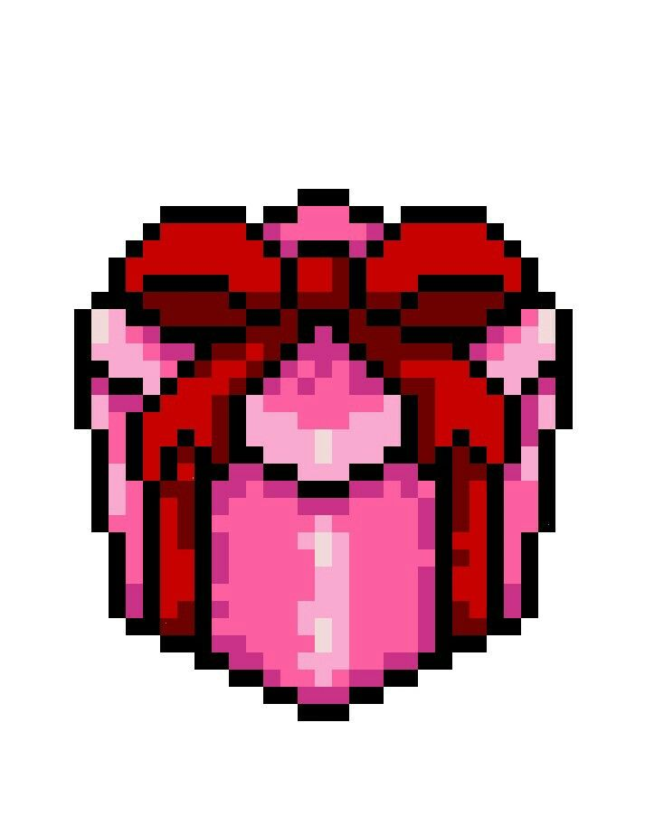

You arrive in Stardew Valley...
The farm is overgrown, but full of potential...
You meet friendly villagers eager to help...
Pelican Town welcomes you with open arms...
The seasons change, and a new adventure begins...
You till the soil, plant seeds, and water your crops...
The first sprouts emerge, bringing hope...
A rainy day allows you to explore the mines...
Deep underground, you find rare ores and lurking dangers...
You attend the Stardew Valley Fair...
Games, contests, and delicious food await!
As years pass, your farm flourishes...
Your cozy home, a testament to your hard work...
One evening, you look up at the stars...
This valley has truly become your home.







